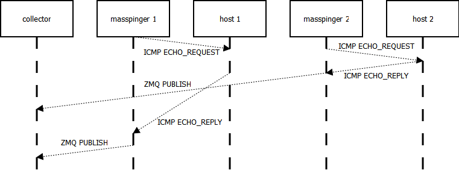

Introduction
masspinger is a command-line tool that uses ICMP pings, and in the future HTTP GETs and SIP REGISTERs/calls, to continuously monitor network machines. It is intended for deployment by network administrators as part of a broader network monitoring system. It supports both Windows and Linux operating systems.
masspinger leverages asynchronous I/O, also known as non-blocking I/O, as opposed to using a threaded model, so that it may monitor very large numbers of hosts at a lesser cost[1]. Morever, rather than plough in lots of additional functionality in order to display/track gathered results it uses the ZeroMQ socket library to communicate its results. This will allow network administrators to efficiently and scalably use masspinger as a lower-level building block for constructs written in higher-level languages. Please see the Developer's Guide for more information.
Installation and quick start guide
Windows
The following have been tested on Windows XP SP2 and Windows 7, but should also other compatible versions of Windows. In order to use masspinger you need Administrator access on the machine it runs on.
- Either download the ZIP package of the GitHub repo or git clone it.
- The masspinger/bin/win32/release folder contains masspinger.exe and other required DLL files that must remain in the same directory.
- If you do not have Microsoft Visual Studio (MSVC) 2008 or later installed on the machine download and install the MSVC 2008 Redistributable Package (x86).
- Try to execute masspinger.exe without any command-line arguments. You should get a print-out of the usage text.
Uninstallation involves deleting the files you've downloaded; no other files or Registry settings are altered.
Ubuntu
The following have been testing on Ubuntu Maverick 10.10 but should work on all compatible versions of Ubuntu, and with appropriate modifications on any Linux platform that supports all the libraries used (e.g. RedHat). You must have root user privileges in order to use masspinger.
- Follow the instructions for building the code from source.
- Try to execute masspinger without any command-line arguments. You should get a print-out of the usage text.
Usage
C:\masspinger>masspinger.exe
Need to specify at least one host to monitor.
Allowed options:
--help Produce help message.
-H [ --host ] arg An IP address or DNS hostname to monitor using ICMP
pings.
-b [ --zeromq_bind ] arg One or more ip_address:port pairs to publish ZeroMQ
messages from, e.g. 'tcp://127.0.0.1:5556'.
-V [ --verbose ] Verbose debug output.
For example:
masspinger.exe 192.168.0.1 192.168.0.100 -b tcp://*:5556 -V
will continuously send ICMP pings at an interval of one second to the hosts 192.168.0.1 and 192.168.0.100, publish the results on all interfaces over TCP on port 5556, and show verbose diagnostics about low-level events. A further example:
./masspinger hostname1 hostname2 hostname3 hostname4 hostname5 -b tcp://10.0.0.1:5556 -b tcp://10.0.0.2:5556
will monitor all five hosts mentioned and publish the results on two different TCP bindings. These could correspond to different Ethernet interfaces and hence provide fault-tolerance in the case of a layer 2 failure on a given interface, assuming the two interfaces are truly orthogonal.
As a starting point for developing higher-level tools that use masspinger, see massping/tools/python_client.py as an example. It just subscribes for all ZeroMQ publish messages and a variable number of bindings and logs them to the console. You'll need to install the Python bindings for ZeroMQ in order to use this tool. Here is an up-to-date Ubuntu repo to use for the bindings.
Download


Building from source
Windows
- Requires Microsoft Visual Studio 2008 and git. I prefer to use the cygwin version of git.
- Download latest version of Boost. Extract to e.g. c:\libs\boost\
- Follow the Boost "Getting Started" instructions to build the Boost binaries. This is essentially opening a Microsoft Visual Studio command prompt, changing directory to the root of the folder where you extracted Boost to, and executing:
bootstrap ./bjam
This will take a long time. - The Boost binaries should now be in e.g. c:\libs\boost\stage\lib\
- Add a pair of system environment variables:
- BOOST_HOME = c:\libs\boost\
- BOOST_LIB = c:\libs\boost\stage\lib\
- From a command prompt execute the following in order to clone a copy of the repository:
git clone git://github.com/asimihsan/masspinger.git
- Open deps/win32/log4cxx/projects/log4cxx.sln in Microsoft Visual Studio. Change the active solution current configuration to "Release" and build the whole solution. This will result in a dynamic DLL called "log4cxx.dll" and other files required for building inside bin/win32/release/.
- Open deps/win32/zeromq/builds/msvc/msvc.sln in Microsoft Visual Studio. Change the active solution configuration to "Release" and build the whole solution. This will result in a dynamic DLL called "libzmq.dll" and other files required for building inside bin/win32/release/.
- Open deps/win32/yaml-cpp/yamlcpp.sln in Microsoft Visual Studio. Change the active solution current configuration to "Release" and build the whole solution. This will result in a static library called "yamlcpp.lib" inside bin/win32/release/.
- Open build/msvc/masspinger.sln in Microsoft Visual Studio. Change the active solution configuration to "Release" and build the whole solution. This will result in an EXE called masspinger.exe inside bin/win32/release/.
Ubuntu
- Download the latest version of Boost as source code, extact it into e.g. /usr/local/lib/boost_1_46_0, and build it into the same directory using these instructions.
- The Boost binaries should now be inside e.g. /usr/local/lib/boost_1_46_0/stage/lib/.
- Add e.g. /usr/local/lib/boost_1_46_0/stage/lib/ to /etc/ld.so.conf and then execute:
ldconfig
.
- masspinger requires log4cxx but I haven't been able to successfully build it from source, so execute:
sudo apt-get install liblog4cxx10 liblog4cxx10-dev
- Either install the latest version of ZeroMQ from source (very easy) or install the latest version of ZeroMQ from Chris Lea's PPA, i.e.:
sudo add-apt-repository ppa:chris-lea/zeromq sudo apt-get update sudo apt-get install zeromq-bin libzmq-dbg libzmq-dev libzmq0
- Download and install yaml-cpp, move the resulting static libary to /usr/local/lib/, and then execute ldconfig .
- Git clone a copy of the repository:
git clone git://github.com/asimihsan/masspinger.git
- Change directory to the src directory, then run:
g++ -O3 -I /usr/local/lib/boost_1_46_0/ -lboost_system -lboost_program_options -llog4cxx -lzmq -lyaml-cpp -Wall -ansi -pedantic `ls *.cpp | xargs` -o masspinger
Troubleshooting
- Q: masspinger isn't doing anything!
A: Turn on verbose trace using the --verbose command-line argument to confirm that the tool is attempting to do something. Then use Wireshark or tcpdump to confirm whether e.g. ICMP pings are leaving your box and whether any responses are coming back. Keep in mind that you cannot sniff on the loopback interface on Windows, so absence on traffic in this scenario doesn't imply a lack of traffic.
Developer's guide
The purpose of masspinger is to monitor the responsiveness of a large number of networked hosts using a wide variety of protocols. Currently it only supports ICMP ECHO_REQUESTs but I intend to support HTTP GETs/POSTs and SIP REGISTERs in the future. masspinger is written in C++ and make heavy use of Boost, ZeroMQ, and log4cxx.
masspinger's main function is mostly a lot of boilerplate that handles the command-line arguments. At its heart is this section at the bottom:
// src/ping.cpp
boost::asio::io_service io_service; boost::shared_ptrping_receiver(new Pinger(io_service, hosts, zeromq_binds, logger)); io_service.run();
The Pinger instance is a single object given hosts, a vector of strings corresponding to hostnames and/or IPv4 addresses to monitor, and zeromq_binds, a vector of strings of addresses that ZeroMQ can bind to in order to publish results. In order to add future functionality, e.g. HttpMonitor or SipMonitor, a new class with a similar constructor prototype would be needed and would use the same io_service instance. The intention is for all monitoring types to not require additional threads to operate. For an accessible tutorial to Boost ASIO please see [2].
Before I move onto the details of the Pinger class, a quick word about ZeroMQ. It is extremely easy to use; Chapter 1 of ZeroMQ's excellent guide should provide a sufficient background to develop clients that listen for ZeroMQ messages from masspinger. Keep in mind that all the examples in the manual usually have equivalents in other languages. As a quick and dirty example of a Python client take a look at tools/python_client.py.
The Pinger class is rather unusual as a consequence of how ICMP sockets work, or rather that lack thereof. It is impossible to receive ICMP ECHO_REPLYs from a given host. Instead one must bind to a raw socket and receive all ICMP ECHO_REPLYs incoming to the host. Hence, the flow of Pinger's constructor is to:
- For each requested ZeroMQ binding, call zmq_bind() with the ZMQ_PUB socket option.
- For each host we're monitoring, get the IP address it uses and call start_send() with a Host instance wrapping around its details. start_send() uses a timer to send an ICMP ECHO_REQUEST once a second to the host.
- Call start_receive() once. This is a non-blocking receive that uses handle_receive() as the callback for all received ICMP packets.
Here's a diagram showing two instances of masspinger, each monitoring a host:

Future development
- Handle all potential exceptions. For example, entering in an unresolvable hostname causes a crash.
- Hostnames that resolve to more than one IP address crash the script. Ideally we monitor the first IP address and periodically re-resolve the hostname.
- Add SIP REGISTER, HTTP GET, HTTP POST monitoring.
- Offer file-based configuration. Doesn't seem feasible to pass absolutely everything via the command-line.
- Offer file-based log4cxx configuration. Admins may have unusual logging requirements, or platform-specific requirements (e.g. using the Windows Event logger).
- Create a fancier front-end example, perhaps web based and offering historical tracking.
- Use a more efficient protocol. Encoding YAML messages over ZeroMQ sounds perfect but the yaml-cpp requires an unusually large amount of CPU power to encode message. Maybe Google Protocol Buffers instead?
- Rather than have masspinger publish all ICMP results over ZeroMQ it makes more sense to publishes periodic summaries of host responsiveness, in order to reduce traffic. However, it must guarantee immediate notification of hosts becoming unresponsive.
References
- Asynchronous I/O, Wikipedia.
- The Boost C++ Libraries, Boris Schäling.